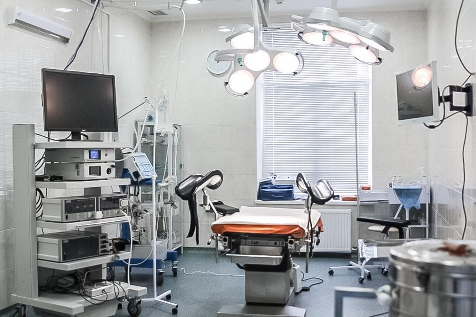

Організація роботи в операційній
«Диявол криється в деталях» - саме так потрібно підходити до будь-якої справи. Особливо, коли мова йде про здоров'я та життя людини. Іншими словами: в кожній справі є безліч нюансів, без урахування яких, рішення задачі часто стає вкрай складним, а іноді і нездійсненним. Як будь-який театр починається з вішалки, так і робота в операційній починається з правильної організації і ергономіки.

Я не буду детально описувати важливість асептики і антисептики, і зупинятися на питаннях стерильності в операційному блоці. Це догма будь-якої операції. В даному розділі хочу зупинитися на розстановці персоналу і техніки, яка, на наш погляд, є найбільш зручною для виконання гінекологічних операцій. Так само описати стандартний набір інструментарію, який ми використовуємо в повсякденній практиці.